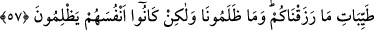

belirtileridir.
Allah’ın izzet ve adlinin büyüklüğünden dolayı onları önce bir titreme ve korku aldı.
Sonra Allah, fazlını göstermek için kullarının gönüllerine bol bol nimet yağmurlarını
yağdırdı. Yakınlık ve mükâşefe ihsân buyurması vuslat alâmetlerinden ve saâdet
delillerindendir.
Hâlini ıslâh edip, câhilce konuşmayı bırakarak, sorusunda ve cevâbında edebli olan,
işlerini usûlüne göre yapan, bu sayılan nimetlere kavuşur. Mesnevî’de şöyle denilmiştir:
Mânevî padişahların huzûrunda terk-i edeb edersen,
Bundan dolayı şehvet ateşine odun olursun.
Çünkü aklını başına almaz ve hidâyet nûrundan yararlanmazsan
Körlerin gözüne cilâ çekersin, onların durumuna düşersin.
İnsanın hakîkat âlemine muttali olması için nefs-i emmâresini öldürmesi gereklidir.
Kuşeyrî nefsi öldürmekle yapılan tevbenin Muhammed ümmeti için de gerekli olduğunu,
ancak İsrâîloğulları kendi canlarına kıyarken, bizim içimizdeki nefsi mânen
öldürmemizle tevbenin gerçekleşeceğini söylemektedir. Bu hususta ilk adım Allah için
insanın nefsinden sıyrılıp rabbine yönelmesidir. İnsan, İsrâîloğulları’nı tevbesini
bizimkinden daha zor zannedebilir. Ancak durum zannedildiği gibi değildir. Zira onlar
nefislerini bir kez öldürüp kurtulurlar. Bu ümmetin seçkinleri ise nefislerini her an
öldürürler. Nitekim bir şâir şöyle der:
Ölüp de istirahata kavuşan ölü değildir.
Asıl ölü, yaşayan ölülerdir.
Mesnevî’de şöyle denmiştir:
Cenâb-ı Hakk’tan güç ve söz söylemede başarı isterim.
Tâ ki iğne ile Kaf dağını yerinden oynatabileyim.
Safları yarıp kıran aslan olmak kolaydır.
Gerçek aslan, kendisini, kendi nefsini kırandır.
57. Ve sizi bulutla gölgeledik, size kudret helvası ve bıldırcın gönderdik ve
“Verdiğimiz güzel nimetlerden yeyiniz” (dedik). Hakikatte onlar bize değil sadece
kendilerine kötülük ediyorlardı.
Allah Teâlâ, onlara verdiği yedinci nimeti zikrederek “Ey İsrâîloğulları, biz bulutu
size gölgelik yaptık” buyurmaktadır. Bu olay, Mısır ve Şam arasında Tîh çölünde
geçmiştir. İsrâîloğulları, denizi geçtikten sonra içinde hiçbir binâ ve ağaç bulunmayan